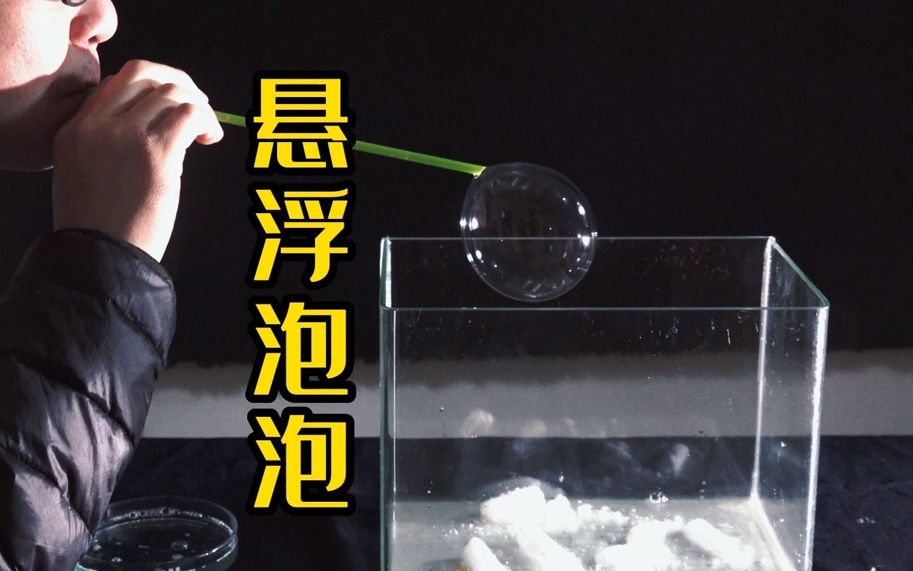

大寒是二十四节气中的最后一个节气，标志着冬季即将结束。以下是关于大寒的详细介绍：
大寒和小寒一样，都是表示天气寒冷程度的节气，大寒是天气寒冷到极致的意思。大寒节气时寒潮南下频繁，是一年中的最寒冷时节。我们认为大寒会是一个简约冷酷的男孩子，大寒是二十四节气里最冷的一个节气，将它拟人便需要在人物身上感受到冷酷，所以我们用了深蓝色，白色，藏青色来拟作人物。给大寒戴上了深色毛帽子，蓝色羊绒围巾，灰色毛衣，藏青色大衣，白灰色裤子，既起到了给人物保暖，也体现了他的简约冷酷。大寒有着深蓝色短发，蓝色眼睛，透出一股光鲜亮丽。他很聪明，不喜欢说话。画面里大寒一副不近人色的样子，但眼里透出一丝温暖，正是体现他isfj的mbti。
isfj 是守护者人格，忠实是守卫者人格类型最独特的特质之一。很少见到守卫者让友谊或亲情因缺乏维系而消逝。相反，他们投入大量的精力来维持与所爱之人的紧密联系—光靠短信问候几声可不够。当亲戚朋友有困难的时候，他们会放下一切伸出援手。大寒就应是这种外冷内热，嘴上说不在乎，其实心里比谁都更在乎一件事的那种人。
大寒 - 悬浮泡泡的实验 Major cold - the experiment of floating bubbles
1.介绍introduction
大寒是一年中最后一个节气，是冬天的一个节气，飞与其他节气相比温度较低，我们就选择了很冷的干冰用来做实验。干冰是固态二氧化碳，它碰到水会产生很美丽的烟雾，就像冬天时人们说话，嘴巴里冒出来的白烟，十分美丽。大寒节气临近春节，在春节前，人们都会准备年货，期待过年，特别的热闹，小孩们也会在一边开心的一起玩耍，有的小孩玩拨浪鼓，有的小孩玩雪，有的小孩就会玩泡泡。泡泡反光后产生五彩的艳丽的颜色，所以我们就选择了泡泡和干冰结合起来的实验。
2.实验原理principle
干冰是固体，二氧化碳会释放出气体。二氧化碳密度比空气大，会沉积在盆子底部，往盘子里吹装着空气的泡泡就会悬浮起来。
3.实验步骤procedure
需要用到的实验材料：于冰，盆子，泡泡水（洗洁精，白糖，水），吸管，泡泡水容器
1. 把干冰铺在棚子里，静置10分钟，不要吹风
2. 将洗洁精，水，白糖都加入泡泡水容器中，搅拌均匀
3. 用吸管蘸泡泡水，在干冰上方吹一个泡泡
4. 观察实验现象
小组成员： 8B Lexi Ann Judy Rudy Raymond